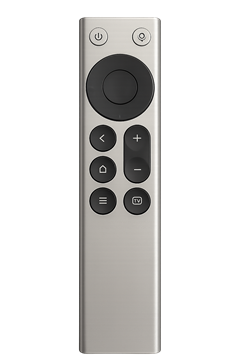

随 Windows 启动登录后后台运行
按键映射
为每个按键设置动作

电源
单击Esc
双击未设置
长按未设置
上
单击↑
双击未设置
长按未设置
左
单击←
双击未设置
长按未设置
返回
单击Del
双击未设置
长按未设置
主页
单击显示桌面
双击未设置
长按未设置
菜单
单击右键菜单
双击未设置
长按未设置
语音
单击语音1
双击 / 长按语音模式下暂停
右
单击→
双击未设置
长按未设置
确定
单击Enter
双击未设置
长按未设置
下
单击↓
双击未设置
长按未设置
+
单击Vol +
双击未设置
长按未设置
−
单击Vol -
双击未设置
长按未设置
TV
单击应用切换
双击未设置
长按未设置